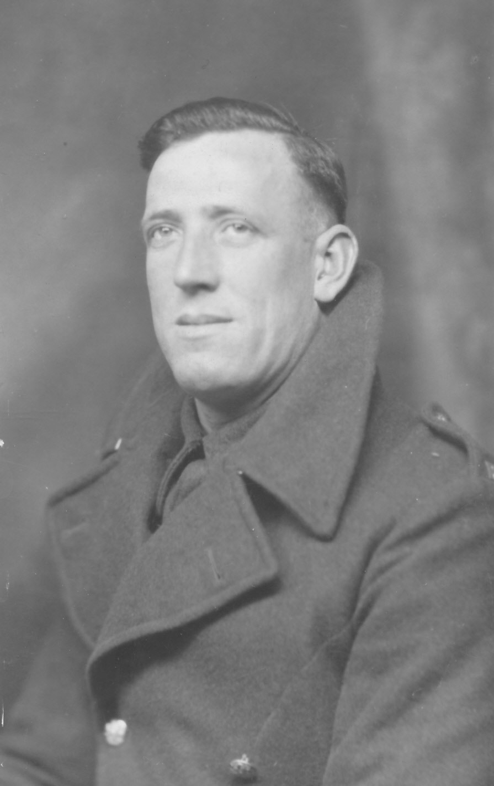
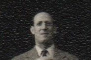
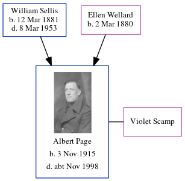

Albert Edward Jellico Page 1915 - c1998
[ Home ] | [ Calendar ] | [ Surnames Index ] | [ Census Index ] | [ Family History ]A truck driver and the child of William Sellis (a general laborer) and Ellen Wellard, Albert Page, the fourth cousin on the father's side of Nigel Horne, was born in Elham, Kent, England on Nov 3, 19151,2,3. He married Violet Scamp in Elham around Nov 19394. On Sep 29, 1939, he was living at 65 Marshall Street, Folkestone, Kent, England1.
He died c. Nov 1998 in Ashford, Kent, England3.
Parents
- William Ernest was born on Mar 12, 1881
- Ellen Fanny Maria was born on Mar 2, 1880
Citations
- 1939 Register - Findmypast (was the son of the head of the household)
- England & Wales births 1837-2006 - Findmypast
- England & Wales deaths 1837-2007 - Findmypast
- England & Wales Marriages 1837-2005 - Findmypast
Media
Albert Edward Jellico Page

Albert Edward Jellico Page - 2

1939 Register Transcription - TNA-R39-1721-1721B-021-44
England & Wales deaths 1837-2007 - BMD/D/1998/10/82706619
England & Wales births 1837-2006 - BMD/B/1915/4/AZ/001004/089
England & Wales marriages 1837-2005 - BMD/M/1939/4/PZ/000004/056
Family Tree
Generated by ged2site. Last updated on Jun 11, 2024